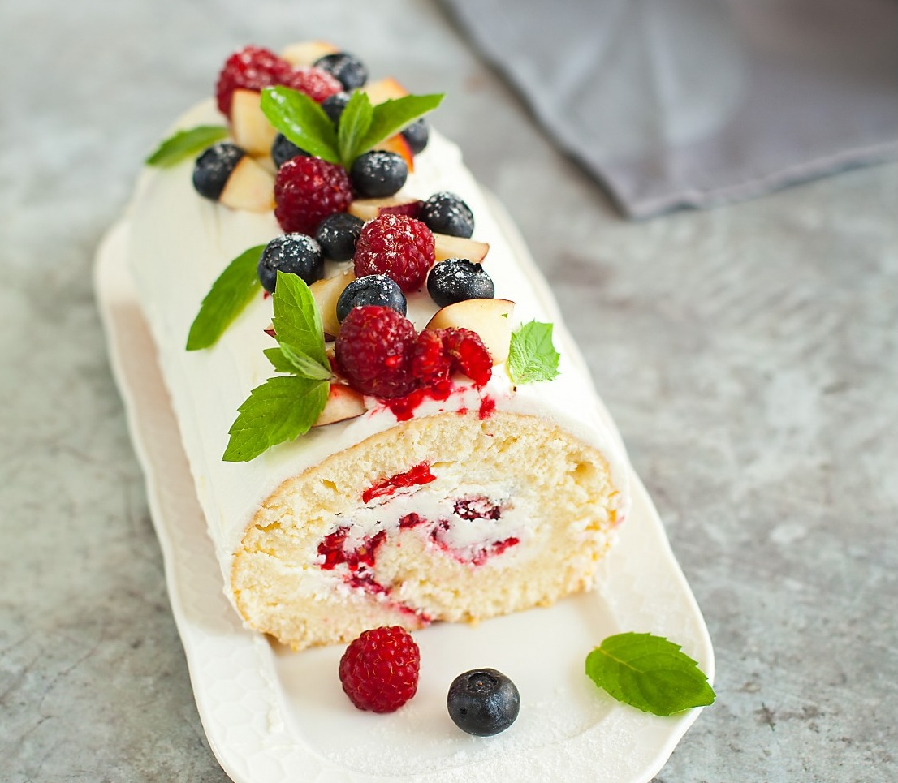

Рецептов бисквитных рулетов множество, мы хотим предложить вам самый несложный вариант с минимальным набором ингредиентов. Бисквитное тесто здесь — самое простое, в нем даже нет разрыхлителя. Очень удобный рецепт для дачи, где частенько в нужный момент не оказывается пакетика разрыхлителя. По сути, это то же самое тесто, что используется для итальянского печенья савоярди. Так что берите рецепт на заметку, только для печенья лучше увеличить количество крахмала до 1 ст. л. и отсаживать тесто с помощью кондитерского мешка либо нарезать на полоски, если планируется использовать печенье в тирамису. Если у вас нет небольшого противня, можно сделать его из двойного слоя фольги, поместив на большой противень и сформировав бортики, и выстелить бумагой для выпечки.